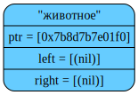
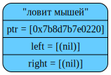
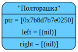
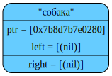
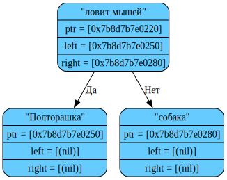
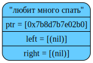
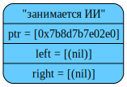
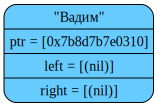

NODE DUMP called at source/tree.cpp:266:TreeLoadNode(): Created new node - ""ловит мышей"("Полторашка"nilnil)("собака"nilnil))("любит много спать"("занимается ИИ"("Вадим"nilnil)("Василий"nilnil))("Вова"nilnil)))".
curPos = '("ловит мышей"("Полторашка"nilnil)("собака"nilnil))("любит много спать"("занимается ИИ"("Вадим"nilnil)("Василий"nilnil))("Вова"nilnil)))'

NODE DUMP called at source/tree.cpp:266:TreeLoadNode(): Created new node - ""Полторашка"nilnil)("собака"nilnil))("любит много спать"("занимается ИИ"("Вадим"nilnil)("Василий"nilnil))("Вова"nilnil)))".
curPos = '("Полторашка"nilnil)("собака"nilnil))("любит много спать"("занимается ИИ"("Вадим"nilnil)("Василий"nilnil))("Вова"nilnil)))'

NODE DUMP called at source/tree.cpp:266:TreeLoadNode(): Created new node - "ilnil)("собака"nilnil))("любит много спать"("занимается ИИ"("Вадим"nilnil)("Василий"nilnil))("Вова"nilnil)))".
curPos = 'nilnil)("собака"nilnil))("любит много спать"("занимается ИИ"("Вадим"nilnil)("Василий"nilnil))("Вова"nilnil)))'

NODE DUMP called at source/tree.cpp:270:TreeLoadNode(): After creating left subtree.
curPos = '("собака"nilnil))("любит много спать"("занимается ИИ"("Вадим"nilnil)("Василий"nilnil))("Вова"nilnil)))'

NODE DUMP called at source/tree.cpp:266:TreeLoadNode(): Created new node - "ilnil))("любит много спать"("занимается ИИ"("Вадим"nilnil)("Василий"nilnil))("Вова"nilnil)))".
curPos = 'nilnil))("любит много спать"("занимается ИИ"("Вадим"nilnil)("Василий"nilnil))("Вова"nilnil)))'

NODE DUMP called at source/tree.cpp:274:TreeLoadNode(): After creating right subtree.
curPos = ')("любит много спать"("занимается ИИ"("Вадим"nilnil)("Василий"nilnil))("Вова"nilnil)))'

NODE DUMP called at source/tree.cpp:270:TreeLoadNode(): After creating left subtree.
curPos = '("любит много спать"("занимается ИИ"("Вадим"nilnil)("Василий"nilnil))("Вова"nilnil)))'

NODE DUMP called at source/tree.cpp:266:TreeLoadNode(): Created new node - ""занимается ИИ"("Вадим"nilnil)("Василий"nilnil))("Вова"nilnil)))".
curPos = '("занимается ИИ"("Вадим"nilnil)("Василий"nilnil))("Вова"nilnil)))'

NODE DUMP called at source/tree.cpp:266:TreeLoadNode(): Created new node - ""Вадим"nilnil)("Василий"nilnil))("Вова"nilnil)))".
curPos = '("Вадим"nilnil)("Василий"nilnil))("Вова"nilnil)))'

NODE DUMP called at source/tree.cpp:266:TreeLoadNode(): Created new node - "ilnil)("Василий"nilnil))("Вова"nilnil)))".
curPos = 'nilnil)("Василий"nilnil))("Вова"nilnil)))'

NODE DUMP called at source/tree.cpp:270:TreeLoadNode(): After creat